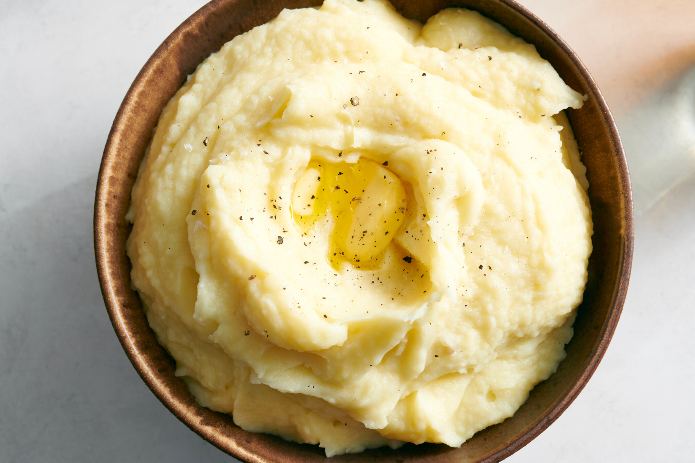

Fluffy Mashed Potatoes

Description
This recipe uses a masher and a mixer instead of a ricer or food mill to
make smooth and creamy mashed potatoes. As long as you don’t mix
excessively, the potatoes will come out light, not gummy.
Ingredients
- 2 pounds Yukon Gold potatoes, scrubbed
- 2 pounds russet potatoes, scrubbed
- Salt and freshly ground white or black pepper
- 4 garlic cloves, smashed and peeled
- 3 fresh thyme sprigs
- 2¾ cups whole milk
- 12tablespoons unsalted butter, cut into pieces
Steps
- Fill a large saucepan about halfway with cool water and set aside. Peel the potatoes, then cut them into 1-inch pieces and transfer to the saucepan as you work to prevent browning. Add more water, if needed, to cover the potatoes by about an inch, then set the saucepan over medium-high heat. Salt the water generously and bring to a boil, then reduce the heat to maintain a moderate boil. Cook the potatoes until the tines of a fork slide into the pieces with no resistance and they break apart easily when pressed, 20 to 25 minutes.
- Meanwhile, combine the garlic, thyme, 2½ cups milk and 8 tablespoons butter in a separate medium saucepan and bring to a simmer over medium-high heat. Reduce the heat to a gentle simmer and continue to cook while you wait for the potatoes.
- Drain the potatoes in a colander, then return them to the same saucepan and let sit for several seconds to allow excess moisture to evaporate. Mash the potatoes with a potato masher until all of the pieces are broken down into a coarse purée.
- Remove the saucepan with the milk mixture from the heat, pluck out and discard the thyme sprigs, then pour the mixture over the potatoes (reserve the saucepan). Season the mixture with salt and pepper, then, using a hand mixer on low speed, mix until the liquid is incorporated, then increase the speed to medium and mix until just until the potatoes are light and smooth. (If you don’t have a hand mixer, you can just stir them vigorously with a whisk.) Taste the potatoes and season with more salt and pepper as needed, then smooth the surface into an even layer with a spatula.
- In the reserved saucepan, warm the remaining ¼ cup milk and 4 tablespoons butter until the butter is melted, then pour over the surface of the potatoes (do not stir). Cover the saucepan with a lid and let it sit at room temperature or in a warm spot on the back of the stove until you’re ready to serve the potatoes. (They’ll keep in this state for several hours.)
- Before serving, uncover the mashed potatoes and warm over medium-low heat, folding gently with a spatula to incorporate the liquid on the surface and heat the mixture evenly, until hot. (The mashed potatoes will keep, covered, in the saucepan for several hours before serving. Scrape any leftovers into a lidded container and refrigerate for up to 3 days.)